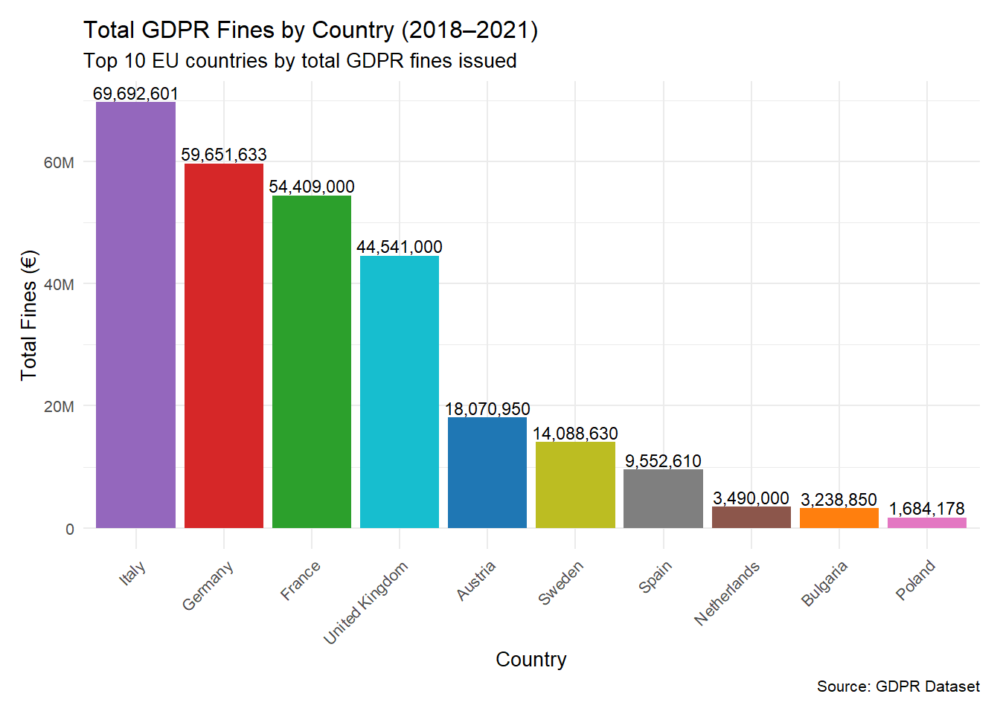
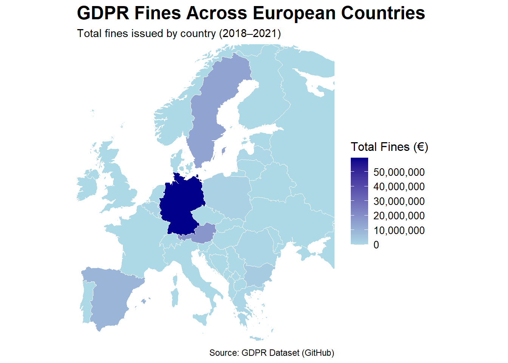

Antash What Does This Have to Do with the European Union?
What Does This Have to Do with the European Union?
The EU’s Leadership in Data Protection
The European Union is at the forefront of global data protection efforts, with the General Data Protection Regulation (GDPR) as its hallmark achievement. Implemented in 2018, GDPR was designed to provide data protection for individuals across all member-states. This has been a major move towards protecting individual’s data and privacy rates in an increasingly digital world.
By harmonizing data protection laws, GDPR not only protects EU citizens but also strengthens the digital single market, building trust in cross-border digital security. With the introduction of the GDPR, the EU has made an internal move to protect its citizens but also set a global standard for digital privacy legislation. The adoption of the GDPR has influenced other nations including Brazil, Japan, and the United States (California’s CCPA).
.jpg)
Why GDPR Requires EU-Level Regulation
The General Data Protection Regulation (GDPR) is more than just a policy; it is a major component of the European Union’s strategy to safeguard citizens’ rights in an increasingly digital world. Its implementation at the EU level addresses challenges that transcend national borders and ensures a unified approach to data protection.
Harmonizing Data Protection Across Member States
Before the GDPR, individual EU member states had their own data protection laws, creating a fragmented and inconsistent legal landscape. This patchwork of regulations made compliance difficult for businesses operating across borders and left individuals with uneven levels of protection. The GDPR resolves this by creating a single, standardized framework that applies to all 27 member states, ensuring consistency in data protection standards while simplifying compliance for businesses operating within the digital single market.
Strengthening the Digital Single Market
Data is at the heart of the EU’s Digital Single Market strategy, and a unified approach to data protection is essential for its success. By fostering trust in digital services, the GDPR enables consumers to confidently engage in cross-border transactions, while businesses benefit from clear and predictable rules.
Defense Agaisnt External Threats
In an age where data breaches and misuse can cause global disruptions, the GDPR serves as a robust defense mechanism. Its strict standards for data processing and severe penalties for non-compliance deter misuse by both domestic and international entities. By requiring companies outside the EU to comply with its rules when handling EU citizens’ data, the GDPR reinforces the EU’s commitment to protecting its residents, regardless of where their data is processed.
This chart provides a detailed comparison of total GDPR fines, in euros, among the ten EU countries with the highest penalties from 2018 to 2021. The large contrast between nations, ranging from Italy at the top to Poland at the tenth position, demonstrates that significant data protection violations can occur across the regions. Additionally, the drop in fines after the United Kingdom’s departure from the EU and subsequent declines beyond countries like Spain highlight how GDPR enforcement varies widely across Europe. Overall, this visualization emphasizes the widespread relevance of the GDPR and the differing levels of data protection enforcement in different European nations.
Why GDPR is Essential as an EU Policy
The General Data Protection Regulation (GDPR) reflects the European Union’s commitment to protecting its citizens’ rights in an increasing digital world. Through the GDPR and other data protection policies, the EU is able to level the playing field and ensure that both individuals and business get and operate under a consistent, fair, and transparent framework. The harmonization of the policy serves numerous purposes, it protects personal privacy, but also strengthens the EU’s digital single market across borders.
Data protection policy such as the GDPR is an EU level issue as it addresses challenges no single nation could tackle alone. As the world and Europe continues to globalize and as the digital economy becomes more interconnected, the EU’s leadership in setting these data protection standards positions itself as a model for other nations. The GDPR represents more than just regulation, but is a statement of the EU’s dedication to fairness, accountability, innovation and protection of its citizens’ rights.

This map displays the total amount of GDPR fines imposed by European countries between 2018 and 2021. By highlighting the variation in penalties across different regions, it shows the comprehensive reach of the GDPR and the importance of ensuring data protection compliance throughout Europe.
Sources
European Commission. General Data Protection Regulation (GDPR). 2016. https://ec.europa.eu/info/law/law-topic/data-protection_en.
GitHub. GDPR Fines Dataset (2018–2021). Accessed November 2024. https://github.com.
OpenSense Labs. “GDPR User Rights and Business Guidelines.” OpenSense Labs Blog. Accessed November 27, 2024. https://opensenselabs.com/blog/gdpr-user-rights-business-guidelines.
Ritchie, Hannah et al. Our World in Data: Internet and Digital Skills in Europe. Accessed November 2024. https://ourworldindata.org.
Eurostat. Individuals Who Have Basic or Above Basic Digital Skills by Sex. 2023. https://ec.europa.eu/eurostat.
European Parliament. Understanding GDPR Enforcement: Role of the European Data Protection Board. Accessed November 2024. https://www.europarl.europa.eu.